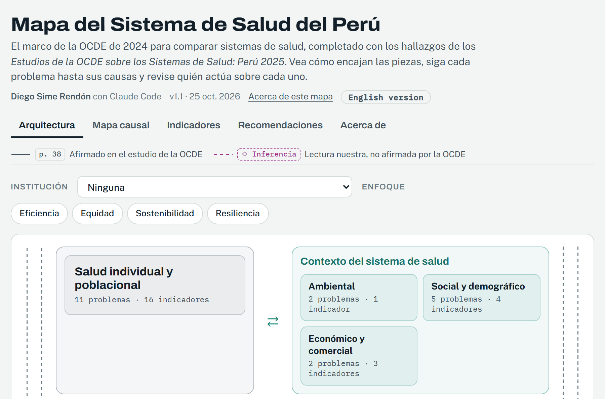

Salud pública · Mapa interactivo
Mapa del Sistema de Salud del Perú

Pregunta
¿Cómo encajan las piezas del sistema de salud peruano, qué causa cada problema y quién puede actuar sobre él?
Resultado
51 problemas y 80 vínculos causales (68 de la OCDE y 12 inferidos, marcados aparte), con 67 indicadores y 22 recomendaciones.
Qué es
Una herramienta de trabajo para ver el sistema de salud del Perú como una sola arquitectura y poder desarmarla. Usa como esqueleto el marco de la OCDE de 2024 para evaluar sistemas de salud y lo completa con los hallazgos del estudio de la OCDE sobre el Perú de 2025.
Tiene cuatro vistas:
- Arquitectura: cómo se relacionan el contexto, los recursos, los servicios y los resultados.
- Mapa causal: cada problema con sus causas y sus efectos.
- Indicadores: las cifras del Perú frente al promedio de referencia.
- Recomendaciones: 22 propuestas agrupadas en acceso y calidad, eficiencia y sostenibilidad financiera, y resiliencia.
El hallazgo central
El estudio de la OCDE describe un sistema segmentado (esquemas distintos para personas distintas) y fragmentado (los esquemas no trabajan juntos). Ese solo rasgo de diseño alcanza al financiamiento, los datos, la calidad y el acceso.
Cómo lo hice
Planteé la pregunta, elegí las fuentes, validé cada lectura y fijé las reglas del trabajo, como mantener cada inferencia visiblemente separada de lo que afirma la OCDE. Claude Code leyó ambos informes completos, extrajo los hallazgos con sus páginas, propuso la estructura causal y construyó la página bajo mi dirección.
Limitaciones
- Un vínculo significa que el estudio relaciona dos elementos. No estima la magnitud del efecto.
- El estudio sobre el Perú no cita el marco de la OCDE, así que asignar cada hallazgo a un bloque del marco es una correspondencia mía.
- Algunos temas tienen poca cobertura en el estudio, como conocimiento e innovación, determinantes comerciales y cuidados de largo plazo.
Fuentes
- OCDE (2024), Rethinking Health System Performance Assessment.
- OCDE (2025), Estudios de la OCDE sobre los Sistemas de Salud: Perú 2025.